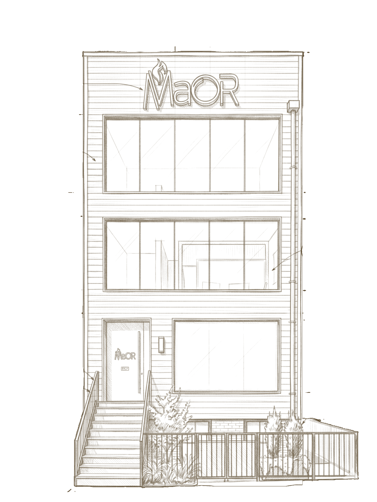

Maor presents the Rebbe's sichos and maamorim to kids in a way they truly live with — and the impact is real.
Partner to help Maor scale so every Jew becomes part of bringing Moshiach.

The Rebbe gave us a clear directive: prepare the world for Moshiach.
But right now, we are leaving too many kids behind
because they are missing the lifeblood of Chassidus.
Without the right tools, Yiddishkeit can feel like a checklist. Inner struggles can leave a child feeling,
"I'm not good enough." Maor will bring the warmth of Chassidus — helping every child connect to their neshama and grow with joy.
For many Jewish kids, Judaism feels like just a culture. They never see the depth inside. Maor will show them the beauty of Torah — and the unique purpose only they can live.
Every child has a mission. But few get the chance to find it. Maor will help them discover their purpose — and live with kindness through the Sheva Mitzvos Bnei Noach.
We use high-quality video storytelling to grab a child's curiosity.
We are more engaging than just "teaching."
This style breaks down barriers, allowing the Rebbe's lessons
to fundamentally change their mindset.
They realize they are Hashem's beloved children, armed with
the exact tools they need to succeed in their daily lives.
We need to reach every single child.
To do that, we are launching two monumental projects.
We are not starting from scratch. We have the data and the audience to prove this works B"H.
By expanding into the broader frum and non-frum markets with these new capabilities, we project our reach will double in the next year alone.
We believe in creating systems that sustain themselves. Strategic donor partnerships fund the launch.
Once operational, the system pays for itself — through subscriptions and product sales across new market tracks.
A generation of children left unempowered, relying on secular media for engagement, and missing their crucial role in bringing Moshiach.
Every child educated, uplifted, and equipped with the mindset to change the world.